Libvirt is Open Source API, 其目的就是在於提供使用者方便的去配置、新建、修改、監控、控制或者是遷移用戶虛擬機器, 也就是一個管理虛擬機器的工具. Libvirt 目前支援的 hypervisor 有 KVM/QEMU, Xen, LXC, OpenVZ, VirtualBOX, Microsoft Hyper-V, VMware 等. 而目前利用 Libvirt 去開發應用軟體來管理虛擬機器的種類也很多, 例如使用指令模式來管理的 virsh, virt-image, virt-install 等, 或者使用圖形化介面管理的 virt-manager, virt-viwer, 使用Web管理的 AbiCloud, OVirt, 在底下我們會利用 virsh 指令模式與 virt-manager 圖形介面模式分別來對虛擬機器做管理.
|
|
為了避免輸入錯誤以及方便區分 IP 使用環境，我們使用下列幾個按鈕來快速取代各個不同 IP。(與 Lab1 稍有變化)
您的機器參數:
Username ： [USERNAME]
Code number ： [code-num]
Host IP ： [Host-IP]
VM001 IP ： [VM001-IP]
VM002 IP ： [VM002-IP]
VM003 IP ： [VM003-IP]
StudentID IP ： [StudentID-IP]
Gateway ： [Gateway-IP]
若您使用 MS Windows, 請參閱說明 Login Server From Windows.
Open a terminal emulator and then type the following commands.
ssh [USERNAME]@cloud.cs.nchu.edu.tw -X -p [PortNUM]
sudo aptitude update
sudo aptitude install libvirt-bin
The following NEW packages will be installed:
augeas-lenses{a} bridge-utils{a} dmeventd{a} dnsmasq-base{a} ebtables{a} ethtool{a} hdparm{a}
libapparmor1{a} libaugeas0{a} libdevmapper-event1.02.1{a} liblvm2cmd2.02{a} libnetcf1{a}
libnetfilter-conntrack3{a} libnl-3-200{a} libnl-route-3-200{a} libnuma1{a} libparted2{a}
libpcap0.8{a} libpciaccess0{a} libreadline5{a} libvirt-bin libvirt-clients{a}
libvirt-daemon{a} libvirt-daemon-system{a} libvirt0{a} libx86-1{a} libxml2-utils{a}
libxslt1.1{a} lvm2{a} netcat-openbsd{a} parted{a} pm-utils{a} powermgmt-base{a} vbetool{a}
0 packages upgraded, 34 newly installed, 0 to remove and 98 not upgraded.
Need to get 9,721 kB of archives. After unpacking 26.0 MB will be used.
sudo adduser [USERNAME] libvirt
Adding user `[USERNAME]' to group `libvirt' ...
Adding user [USERNAME] to group libvirt
Done.
exit
ssh [USERNAME]@cloud.cs.nchu.edu.tw -X -p [PortNUM]
cd ~/KVM/img
qemu-img create -f qcow2 vm002.qcow2.img 5G
Formatting 'vm002.qcow2.img', fmt=qcow2 size=5368709120 encryption=off cluster_size=65536 lazy_refcounts=off
ls -lh
total 1799912
-rw-r--r-- 1 cloud cloud 240123904 Sep 21 14:25 debian-testing-amd64-netinst.iso
-rw-r--r-- 1 cloud cloud 5368709120 Oct 1 00:33 vm001.img
-rw-r--r-- 1 cloud cloud 197120 Oct 10 05:58 vm002.qcow2.img
使用 XML 檔案來定義網路配置, 首先我們建立 ~/KVM/virsh 資料夾來管理 virsh 相關檔案. 我們可以從 libvirt 網站找到更詳細關於 Network XML 的說明
mkdir ~/KVM/virsh; cd ~/KVM/virsh
查詢 interfaceid 以便待會填入, 你需要先啟動 open vSwitch
由於系統已重置, 同學請將 ~/KVM/bin/ovs-stop 與 ~/KVM/bin/ovs-start 中的 IP 變數取代成自己的 Host IP.
~/KVM/bin/ovs-stop; ~/KVM/bin/ovs-start
Please change 'CodeNUM' into your Code-Number in this script!
Please change 'CodeNUM' into your Code-Number in this script!
sed -i s'/CodeNUM/10/' ~/KVM/bin/ovs-st*
~/KVM/bin/ovs-stop; ~/KVM/bin/ovs-start
sudo ovs-vsctl show
64ab3ed8-5b10-442d-8f94-983d8b6dff6d
Bridge "br0"
Port "br0"
Interface "br0"
type: internal
Port "eth0"
Interface "eth0"
ovs_version: "2.3.0"
nano network.xml
<network>
<name>ovs-br0</name>
<forward mode='bridge'/>
<bridge name='br0'/>
<virtualport type='openvswitch'>
<parameters interfaceid='MY interfaceid'/>
</virtualport>
</network>
sudo virsh net-define ~/KVM/virsh/network.xml
Network ovs-br0 defined from /home/cloud/KVM/virsh/network.xml
sudo virsh net-list --all
Name State Autostart Persistent
----------------------------------------------------------
default inactive no yes
ovs-br0 inactive no yes
sudo virsh net-start ovs-br0
Network ovs-br0 started
sudo virsh net-list --all
Name State Autostart Persistent
----------------------------------------------------------
default inactive no yes
ovs-br0 active no yes
sudo virsh net-autostart ovs-br0
Network ovs-br0 marked as autostarted
sudo virsh net-list --all
Name State Autostart Persistent
----------------------------------------------------------
default inactive no yes
ovs-br0 active yes yes
sudo virsh net-destroy ovs-br0
sudo virsh net-undefine ovs-br0
sudo aptitude install virtinst
man virt-install
sudo virt-install \
--name VM002 \
--virt-type kvm \
--memory 2048 \
--network network=ovs-br0 \
--graphics vnc,listen=0.0.0.0,port=5902 \
--cdrom ~/KVM/img/debian-testing-amd64-netinst.iso \
--disk ~/KVM/img/vm002.qcow2.img,bus=virtio,cache=none
Starting install...
Creating domain... | 0 B 00:00
(virt-viewer:21430): Gdk-ERROR **: error: XDG_RUNTIME_DIR not set in the environment.
Domain installation still in progress. You can reconnect to
the console to complete the installation process.
檢查是否有連接到 Open vSwitch
sudo ovs-vsctl show
64ab3ed8-5b10-442d-8f94-983d8b6dff6d
Bridge "br0"
Port "eth0"
Interface "eth0"
Port "vnet0"
Interface "vnet0"
Port "br0"
Interface "br0"
type: internal
ovs_version: "2.3.0"
查看目前機器狀態
sudo virsh list
Id Name State
----------------------------------------------------
5 VM002 running
打開遠端連線網頁 cloudwebui 並且以 [USERNAME][codeNUM] 帳號登入, 選擇 編號-VM002
剛剛開起來的機器沒有真的要大家安裝的意思, 接著我們試著關閉並且刪除它. 在 virsh 指令中 destory 代表 stop 的意思, 但是帶有強制關閉的意味, 很可惜的是它並不提供正常一點的方式來關閉.
sudo virsh destroy VM002
Domain VM002 destroyed
sudo virsh undefine VM002
Domain VM002 has been undefined
Virsh 管理工具提供的關機方式並不保險 (類似強制關機), 建議同學還是手動從 VM 自行關閉.
ls -l ~/KVM/img
total 1800044
-rw-r--r-- 1 libvirt-qemu libvirt-qemu 240123904 Sep 21 14:25 debian-testing-amd64-netinst.iso
-rw-r--r-- 1 cloud cloud 583122752 Oct 31 15:28 template.img.tgz
-rw-r--r-- 1 root root 5368709120 Oct 10 09:26 vm001.img
-rw-r--r-- 1 root root 197120 Oct 10 05:58 vm002.qcow2.img
我們先將 vm001 複製兩份出來, 作為待會快速佈署使用
cd ~/KVM/img
sudo rm vm002.qcow2.img
cp vm001.img vm002.img; cp vm001.img vm003.img
※ 萬一 vm001 玩壞了怎麼辦, 從 ~/KVM/img/template.img.tgz 是備份檔案, 將其解壓縮並且改名即可使用.
tar zxvf ~/KVM/img/template.img.tgz ; mv template.img vm001.img
我們可以將 Lab1 中安裝好的虛擬機器匯入到 libvirt 中管理, 如此一來便可省去安裝的步驟, 達到快速部署的功效. 記得一定要先關閉舊的虛擬機器, 並且恢復網路!
sudo virt-install \
--name VM001 \
--import \
--virt-type kvm \
--memory 2048 \
--network network=ovs-br0 \
--graphics vnc,listen=0.0.0.0,port=5901 \
--disk ~/KVM/img/vm001.img,bus=virtio,cache=none
Starting install...
Creating domain... | 0 B 00:00
(virt-viewer:21746): Gdk-ERROR **: error: XDG_RUNTIME_DIR not set in the environment.
Domain creation completed. You can restart your domain by running:
virsh --connect qemu:///system start VM001
打開遠端連線網頁 cloudwebui 並且以 [USERNAME][codeNUM] 帳號登入, 選擇 編號-VM001
sudo virt-install \
--name VM002 \
--import \
--virt-type kvm \
--memory 2048 \
--network network=ovs-br0 \
--graphics vnc,listen=0.0.0.0,port=5902 \
--disk ~/KVM/img/vm002.img,bus=virtio,cache=none
Starting install...
Creating domain... | 0 B 00:00
(virt-viewer:21746): Gdk-ERROR **: error: XDG_RUNTIME_DIR not set in the environment.
Domain creation completed. You can restart your domain by running:
virsh --connect qemu:///system start VM002
打開遠端連線網頁 cloudwebui 並且以 [USERNAME][codeNUM] 帳號登入, 選擇 編號-VM002
Assignment2-1: 請將 VM001 與 VM002 網路設定好 (給予不同 IP 位址, [VM001-IP], [VM002-IP]), 並確保兩部虛擬機器可以互通.
由於 virsh 並不會幫我們修改作業系統內部的名稱, 所以從 VM001 複製出來的機器通通叫作 VM001, 請自行修改名稱. (修改 /etc/hosts, /etc/hostname, 兩個檔案後重新登入. )
su
nano /etc/hosts
nano /etc/hostname
hostname NewHostname
exit
exit
若您沒有 Linux 系統請想辦法弄出一個, 您可以使用 VirtualBox 或者 VMware Player 安裝 Debian 系統來完成實習.
Open a terminal emulator and then type the following commands.
ssh [USERNAME]@cloud.cs.nchu.edu.tw -X -p [PortNUM]
在自己的電腦上安裝 virt-manager 來管理遠端機器.
sudo aptitude update
sudo aptitude install virt-manager
我們要使用的是 RSA 金鑰認証, 首先要為自己的電腦建立 private key 與 public key.
ssh-keygen
Generating public/private rsa key pair.
Enter file in which to save the key (/home/[USERNAME]/.ssh/id_rsa):
Enter passphrase (empty for no passphrase):
Enter same passphrase again:
Your identification has been saved in /home/[USERNAME]/.ssh/id_rsa.
Your public key has been saved in /home/[USERNAME]/.ssh/id_rsa.pub.
The key fingerprint is:
80:53:b4:be:0b:62:60:76:62:cf:f6:47:0e:78:12:b9 [USERNAME]@My-Hostname
The key's randomart image is:
+--[ RSA 2048]----+
| .o |
| o . |
| + o |
| o o . |
|.= .+ . S |
|+.=E o o |
| o++ = |
| ..... + |
| .o |
+-----------------+
接著將自己的 public key 註冊到遠端機器上, 將來遠端機器看到該金鑰便會放行登入.
ssh-copy-id [USERNAME]@cloud.cs.nchu.edu.tw -p [PortNUM]
[USERNAME]@cloud.cs.nchu.edu.tw's password:
Number of key(s) added: 1
Now try logging into the machine, with: "ssh -p '[PortNUM]' '[USERNAME]@cloud.cs.nchu.edu.tw'"
and check to make sure that only the key(s) you wanted were added.
接著開啟 virt-manager 主視窗來設定遠端連線.
virt-manager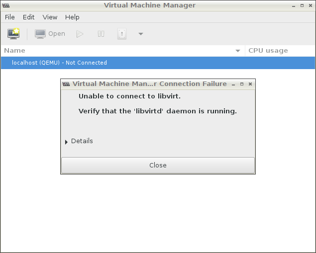
不用理會 Unable to connect to libvirt 錯誤訊息, 因為我們主機本來就沒有安裝 libvirt. 接著點選 Close 關閉它.
點選左上角 File 選單, 接著點選 Add connection..., 來新增遠端機器.
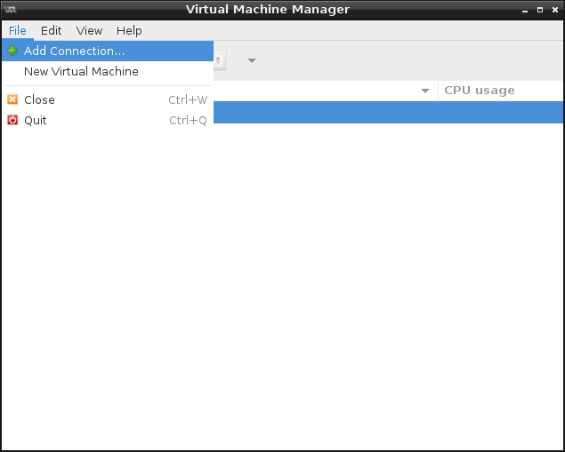接著在 Add Connection 視窗中, Hypervisor 選擇 QEMU/KVM, 勾選 Connect to remotte host, Method 選擇 SSH, Username 輸入 [USERNAME], Hostname 輸入 cloud.cs.nchu.edu.tw:[PortNUM], 最後按下 Connect. (你也可以勾選 Autoconnect, 以後開啟 virt-manager 時會自動連線到這個主機.)
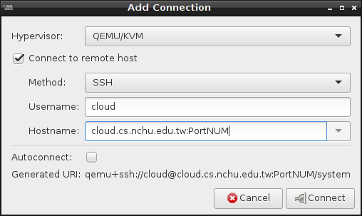 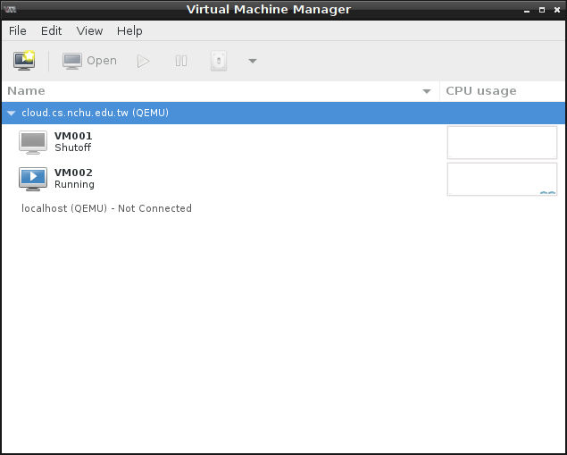圖中看到的 VM001 與 VM002 是我們用 virsh 所建立的機器, 但是我們在 virt-manager 中可能無法正常管理.
接下來我們試著用 virt-manager 來建立虛擬機器, 請點選 File 選單, 接著點選 New Virtual Machine.
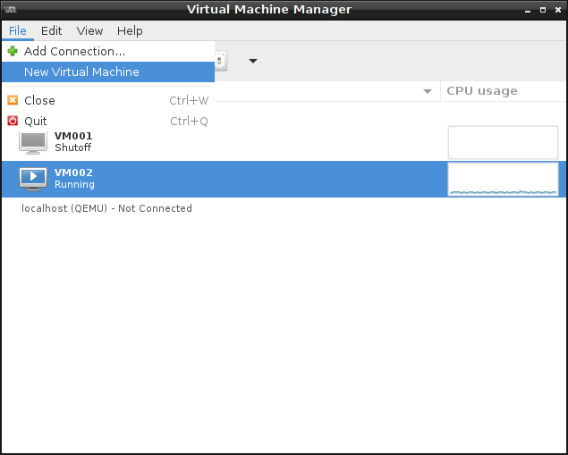在這裡可以選擇安裝機器的方式, 我們選擇 import existing disk image 來匯入之前裝好的虛擬機器.
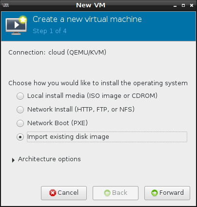點選 Browse...
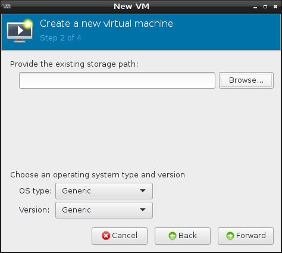Storage Pools 選擇 img, 這是我們之前用 virsh 設定的. 接著點選 vm003.img, 記得嗎我們在前面有多複製一個出來, 複製硬碟前虛擬機器要關閉. 然後就按下 Choose Volume.
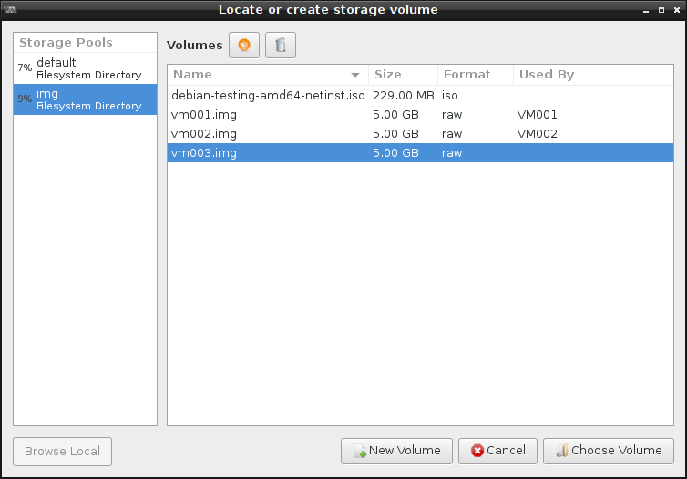OS type 選擇 Linux, Version 選擇 Debian Wheezy (or later). 接著按下 Forward.
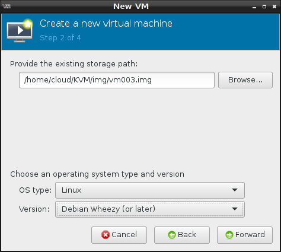這個頁面可以配置記憶體大小與 CPU 數量, 我們使用預設值就好 Memory 1024MB, 1 CPU. Forward.
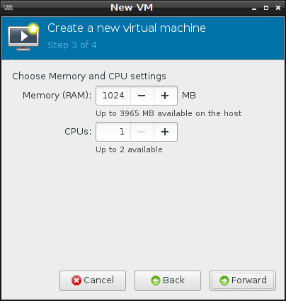Name 欄位輸入 [Code-NUM]-VM003 勾選 Custimize configuration before install. 接著點選 Advanced options 前方的小三角形圖示展開選項, 選擇 Virtual network 'ovs-br0' : Bridge network. 確認無誤後點選 Finish
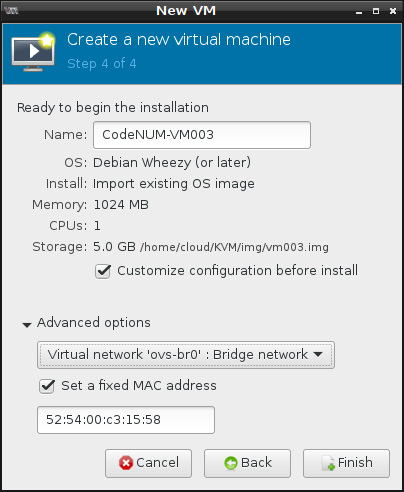這個畫面可以讓我們進一步修改/新增/刪除虛擬機器設備, 檢查無誤就點選左上方的 Begin installation.
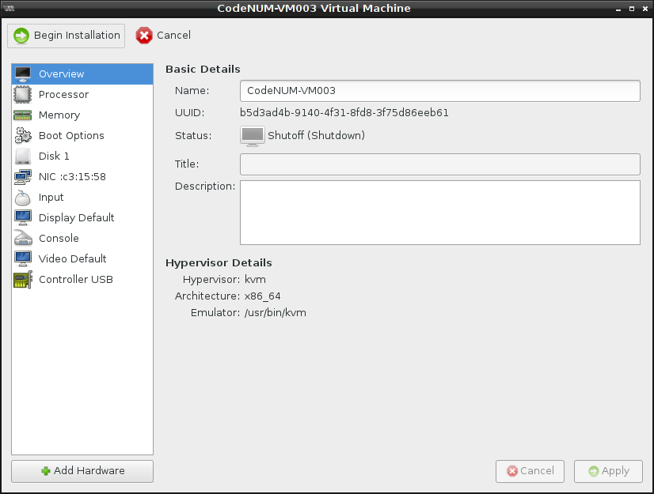開機後登入自己的帳號, 修改網路設定！
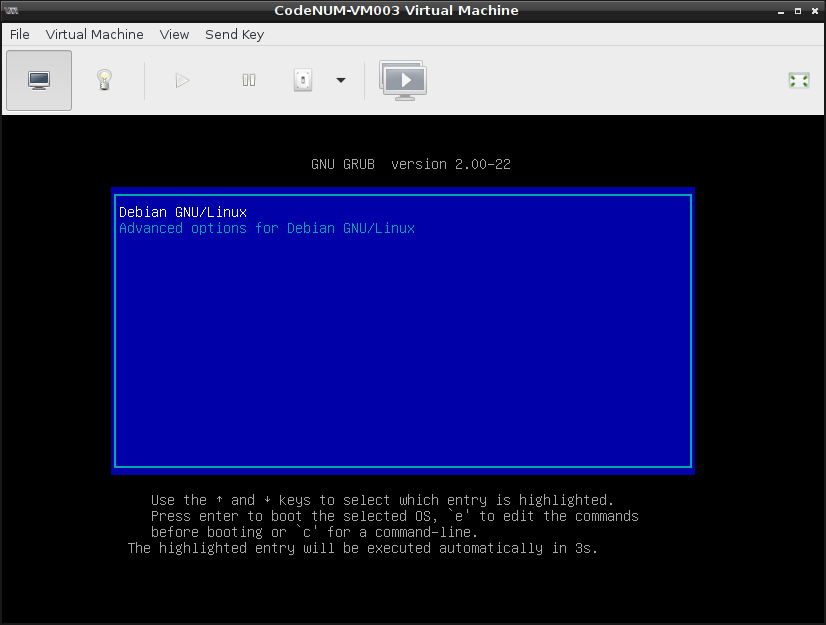Assignment2-2: 請將 [Code-NUM]-VM003 網路設定好 (給予另一個 IP 位址, [VM003-IP]) 確認虛擬機器之間都可以互通.
Open a terminal emulator and then type the following commands.
ssh [USERNAME]@cloud.cs.nchu.edu.tw -X -p [PortNUM]
複製硬碟之前請確定虛擬機器是關閉的!
cd ~/KVM/img
cp vm001.img StudentID.img
將虛擬硬碟複製一份到目標機器, A 排與 55, B排與56, 以此類推 C: 57, D: 58.
scp StudentID.img 172.16.1.'目標編號':~/KVM/img
exit
回到自己的電腦, 注意不是遠端的主機!!
ssh-copy-id [USERNAME]@cloud.cs.nchu.edu.tw -p '目標編號22'
[USERNAME]@cloud.cs.nchu.edu.tw's password:
Number of key(s) added: 1
Now try logging into the machine, with: "ssh -p '目標編號22' '[USERNAME]@cloud.cs.nchu.edu.tw'"
and check to make sure that only the key(s) you wanted were added.
與遠端機器建立 Connection, 請參考前面作法.
開啟 virt-manager 建立虛擬機器 StudentID, 新建的硬碟若沒有出現在 Storage Pool 中點一下重新整理即可. 設定好網路並給予另一個 IP 位址, [StudentID-IP].
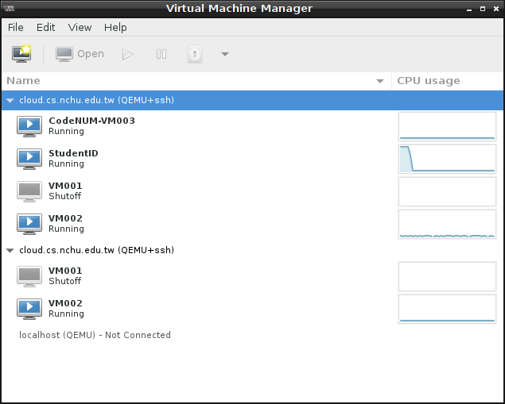在 StudentID 這個機器上按下滑鼠右鍵, 點選 migrate
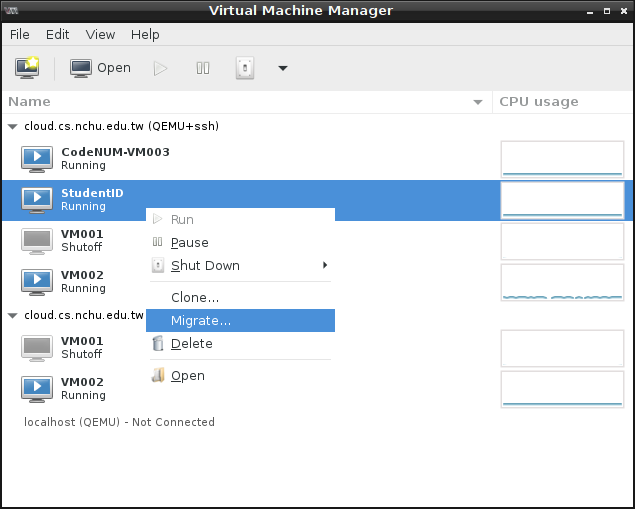點選 Advanced options 前方的三角形展開選項, 設定 Address 172.16.1.'目標編號', 接著按下 Migrate.
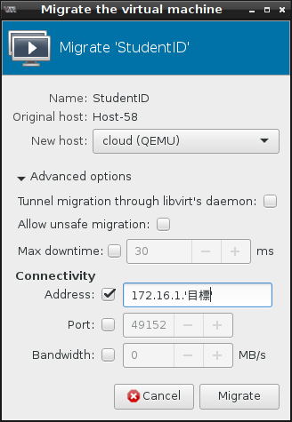遷移成功之後就會看到機器在另一個主機上開啟, 原本主機上的 StudentID 機器會呈現 Shutoff 狀態.
助教檢查確認後, 會將機器遷移回去才算完成作業.
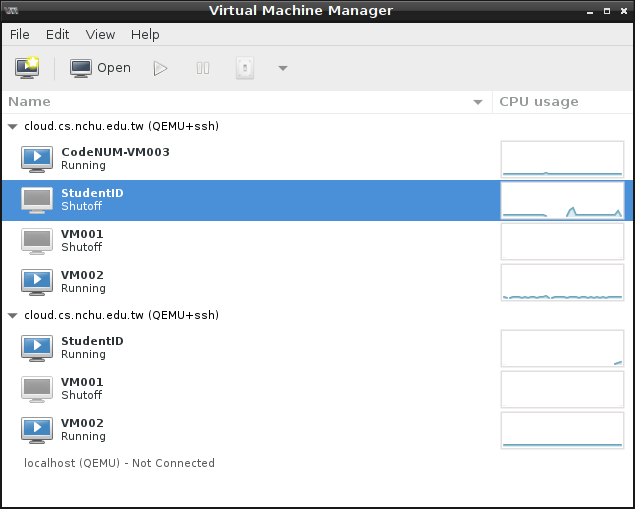由於系統環境重置了，請同學參考 Lab1 修正 ~/KVM/bin/ovs-stop 與 ~/KVM/bin/ovs-start 兩個 script.
sed -i s'/CodeNUM/codeNUM/' ~/KVM/bin/ovs-st*
作業繳交期限 12/10